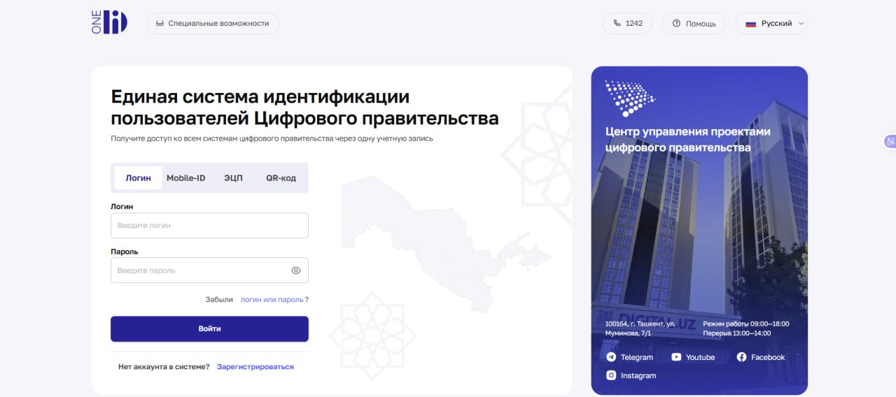
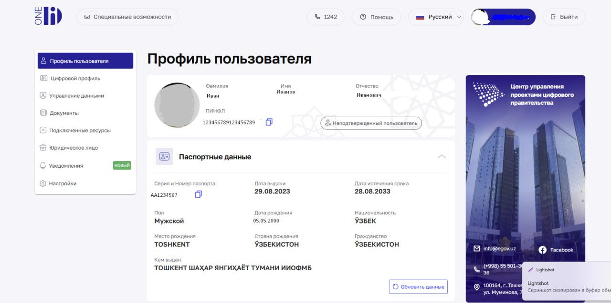
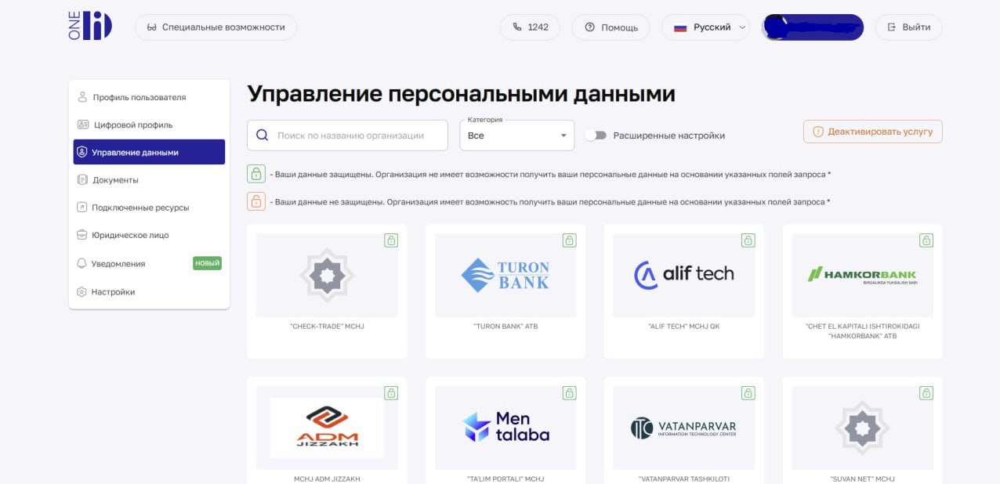
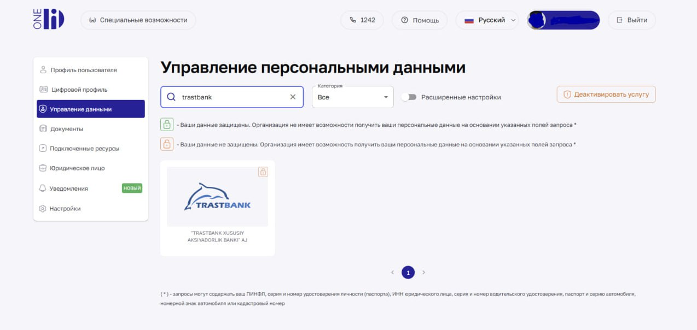
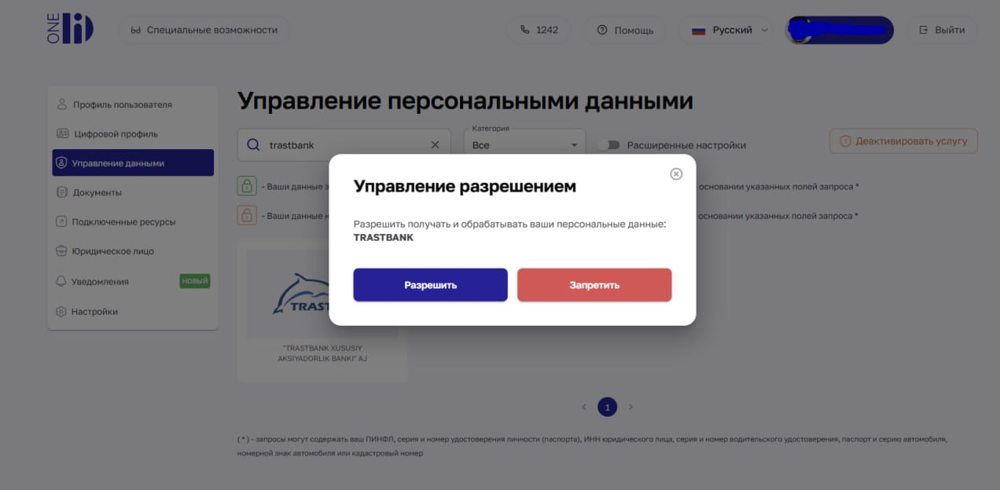
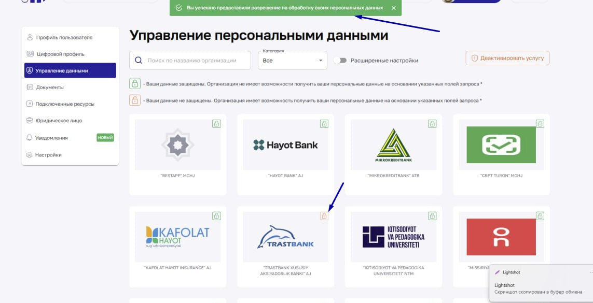

Доступ в OneID для услуг Трастбанка
Разрешение на обработку персональных данных через единую систему идентификации OneID (id.egov.uz), необходимое для полноценного использования услуг ДБО Trustbank Business.
Зачем это нужноДля полноценного использования услуг дистанционного банковского обслуживания (ДБО) необходимо предоставить банку разрешение на обработку данных через систему OneID.
Пошагово
- Авторизация. Перейдите на сайт id.egov.uz и войдите в личный кабинет — по логину и паролю, Mobile-ID, ЭЦП или QR-коду.

- Переход в настройки. После входа откроется «Профиль пользователя». В боковом меню слева выберите пункт «Управление данными» (расположен под «Профиль пользователя» и «Цифровой профиль»).

- Раздел «Управление персональными данными». Здесь собраны все организации, которые запрашивали доступ к вашим данным — с полем поиска по названию, фильтром «Категория» и значками замка у каждой карточки.

- Поиск организации. В строке поиска введите «Трастбанк» (или «trastbank») и нажмите на карточку организации «TRASTBANK XUSUSIY AKSIYADORLIK BANKI» AJ. Оранжевый замок на карточке означает, что разрешение ещё не выдано.

- Подтверждение. В открывшемся окне «Управление разрешением» появится запрос на получение и обработку персональных данных организацией TRUSTBANK. Нажмите кнопку «Разрешить».

- Готово. Система покажет уведомление «Вы успешно предоставили разрешение на обработку своих персональных данных», а замок на карточке банка станет зелёным. Теперь банковские услуги в приложении и личном кабинете ДБО доступны в полном объёме.

Значки на карточках организацийЗелёный замок — данные защищены, организация не может получить персональные данные по указанным полям запроса. Оранжевый замок — организация имеет доступ к запрошенным данным. Кнопка «Деактивировать услугу» позволяет полностью отключить обмен данными с организацией, если это потребуется.
ВажноБез этого разрешения банк не сможет идентифицировать вас в системе, и доступ к операциям будет ограничен.